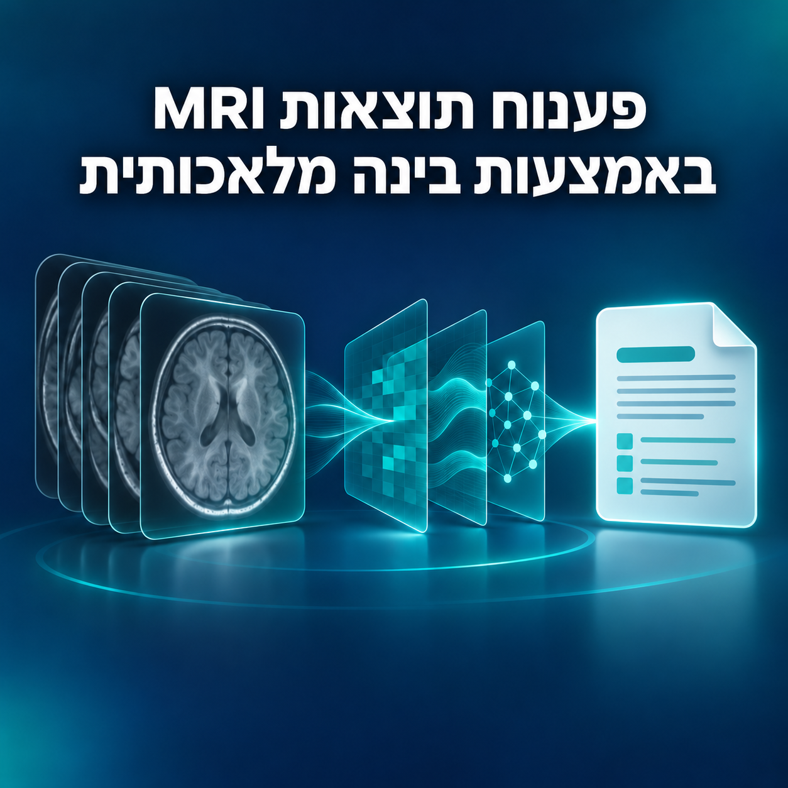

בחינה רב־כלית
עיבוד והשוואה באמצעות מספר גישות וכלי AI מתקדמים, בהתאם לסוג הקבצים שנמסרו.
בדיקה טכנולוגית מעמיקה המשלבת כמה מנועי AI, הצלבת תוצאות והפקת דו״ח מסודר וברור.

עיבוד והשוואה באמצעות מספר גישות וכלי AI מתקדמים, בהתאם לסוג הקבצים שנמסרו.
סיכום כתוב של תצפיות, אי־ודאויות ונקודות שכדאי לשקול להעלות מול איש מקצוע רפואי.
נקודות מרכזיות, שאלות להמשך והצגה ברורה שנועדה לעזור להבין את חומרי הבדיקה לעומק.
מסבירים מה כולל השירות, בודקים שקבצי ההדמיה זמינים ועונים על שאלות.
שליח מגיע עד הבית לאסוף את דיסק ה־MRI. אין צורך להעלות קבצים או להסתבך עם העברה דיגיטלית.
מספר כלי AI בוחנים את החומר, והתוצאות מוצלבות ומאורגנות למסמך אחד.
שליח מחזיר את דיסק ה־MRI יחד עם התוצאות. האיסוף וההחזרה כלולים במחיר.
את קובצי ה־MRI המקוריים בפורמט DICOM, ובמידת האפשר גם את הדו״ח הקיים לצורך הקשר והשוואה.
דו״ח כתוב ומובנה הכולל תצפיות, נקודות מרכזיות, אי־ודאויות ושאלות אפשריות להמשך.
לא. הטופס נועד רק ליצירת קשר. אופן מסירת הקבצים יוסבר בשיחה.
השאירו שם וטלפון בלבד. אין לכתוב מידע רפואי בטופס.
מחיר: 499 ₪ לבחינה, כולל שליח עד הבית לאיסוף הדיסק ושליח להחזרת הדיסק והתוצאות.
נאספים רק שם, טלפון וזמן מועדף לחזרה, על בסיס הסכמה מפורשת ולמטרת יצירת קשר בנוגע לשירות. אין להזין מידע רפואי בטופס. הנתונים נשמרים במערכת מקומית מוגנת, מועברים רק למנהל השירות, אינם משמשים לפרסום מותאם אישית ואינם נמסרים לצדדים שלישיים לצורכי שיווק. ליד שלא הבשיל יימחק בתוך 30 יום. אפשר לבקש עיון או מחיקה בעת שיחת החזרה או באמצעות שליחת טופס נוסף עם המילה "מחיקה" בשדה השם.